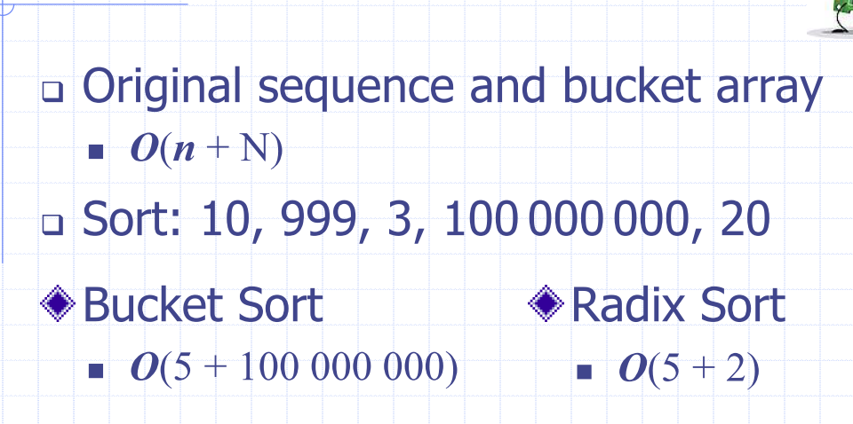

Lecture 3
Recap Lecture 2
Quick-sort
- Randomised divide and conquer sorting algorithm
- Divide: pick a random element (called a pivot)
Quick sort recursion tree
- Execution of quick sort is depicted by a recursion tree
- Each node represents a recursive call of quick sort and stores
- Use the first element as a pivot, and divide the cards according to whether they are 'larger than' or 'smaller than' Good execution example:

The worst case running time
- The worst case occurs when picking the minimum or maximum element
Expected running time
- Good call: The size of and are each less than
- Bad call: one of or is greater than
Probabilistic fact: Expected number of coin tosses required in order to get heads is
In practise, quick sort is chosen over merge sort:
- Is in-place: only needs the array of data, no extra memory needed
- Keep track of pointers, and use them until they cross over
- In place partitioning - update textbook notes:
Sorting:
def bogo_sort(my_list):
while is_sorted(my_list) == False:
random_shuffle(my_list)
worst case: unbounded
Average case:
Best case:
Lecture 3
Counting Comparisons
- Each possible run of the algorithm corresponds to a root-to-leaf path in a decision tree
- If you traverse the tree, you can determine every element in relation to every other element's relation in the list
E.g. permutations
| permutation |
|---|
| a, b, c, |
| a, c, b |
| b, a, c |
| b, c, a |
| c, a, b, |
| c, b, a |
Every comparison based sort takes at best time
- Add a ss of the proof here
Bucket sort
- be a list of key, element items with keys in the range of [0, N-1]
- Create a bucket for each element
- Because the buckets are already sorted in the array, iterate through the buckets and link them together

Analysis
- Initialising the bucket array has to take time
- Phase 1 takes time
- Phase 2 takes time (has to iterate through each chain, in the whole bucket)
- Which ever of or will dominate depening on the size.
Properties and Extensions
- Stable sort property
- Relative order of any two items with the same key is preserved after the execution of the algorithm
Lexicographic order:
- d-tuple is a sequence of d keys where is said to be the i-th dimension of the tuple
Lexicographic-sort (Tuple sort)
- Comparator that compares two tuples by their ith dimension
- LexicographicSort sorts a sequence of d-tuples in
lexicographic order by executing stableSort, d times
- Once per dimension
- Runs in time
Radix sort
- Specialiation of lexicographic-sort
- Uses bucket sort as the stable sorting algorithm in each dimension
- Applicable to tuples where the keys in each dimension are integers in the range .
- Take the sequences of -tuples
Radix-sort for binary numbers
- COnsider a sequence of , -bit integers
- Represent each elements as a -tuple of integers in the range and apply radix-sort with
- Runs in or time
Memory Sort

Arrays
A linear structure is one whose elements can be seen as being in a sequence. That is, one element follows the next.
ADT for a sequence: given a list of items in some order:
build(x): make new data stucture for items inlen(x)get(x)add(x)add to Arrays must be consecutive memory cells- size must be verified at creation (is static)
- constant random time access
- But what if we want to insert something?
- What if we need more space?
Array implementation efficiency:
- Accessing an element
- Iterating over elements:
- Insert/Delete element:
- Memory Usage:
Singly linked list
- Concrete data structure
- sequence of nodes
- head pointer
- Nodes store
- element
- Link to next node

Simple process to insert between two elements
Singly linked list

Doubly linked list

Circularly Linked list
Extensible lists
- push(o)/add(o)/append(o) adds element o at the end of the list
Linked list implementation efficiency
- Accessing an element
- Iterating over elements:
- Memory Usage:
- Insert/Delete element:
- Accessing tail
- Can do better by adding a reference to the tail
Extensible lists and Amortisation
- Array-based implementation of a dynamic list
- space used by the data structure is
- Accessing the element at takes time
- Add and remove tun in time
Extensible lists
- push(o)/add(o)/append(o) adds element o at the end of the list
- How large should the new array be if we run out of capacity?
- Incremental strategy
- increase size by a constant c
- double the size?
Comparison of Strategies
Incremental strategy analysis
- a sequence of n pushes will take time per push
Doubling strategy analysis
- Array is replaced times
- Total time of of a series of push operations is proportional to
- Amortised time of push is